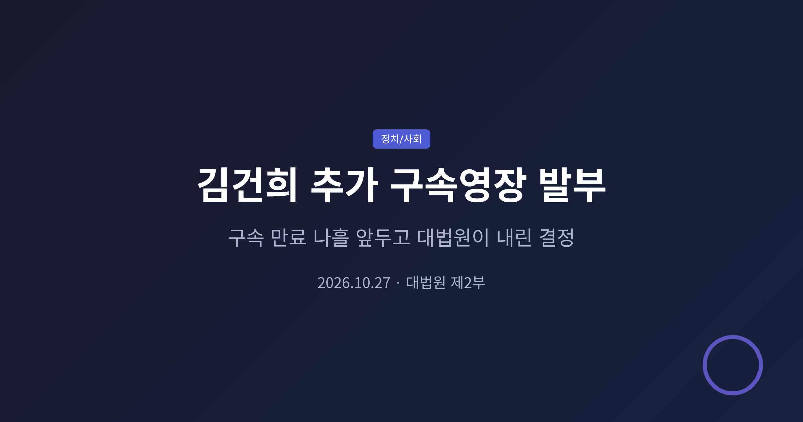
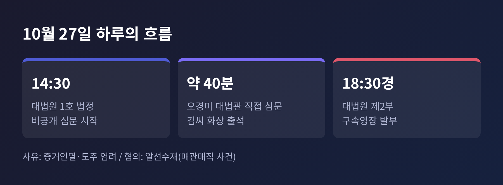
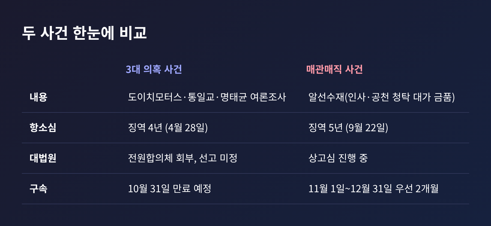
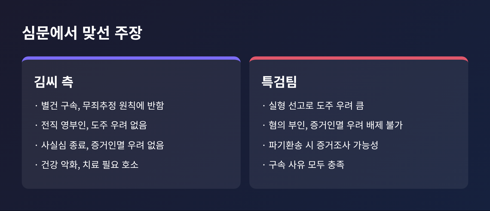
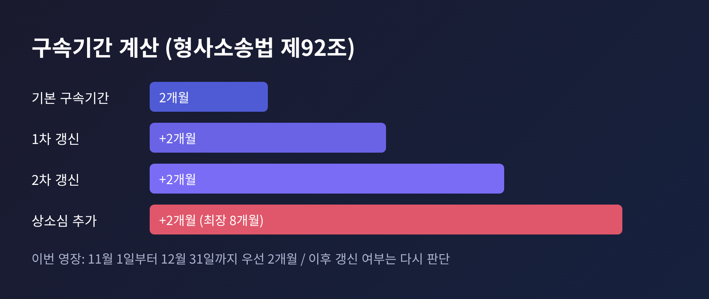
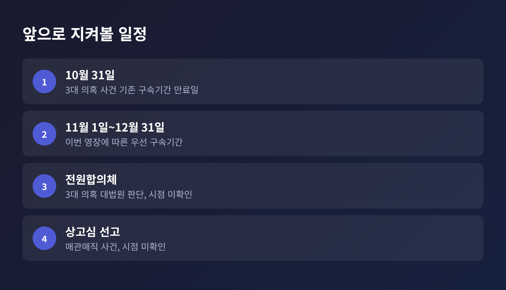

오늘은 10월 27일 열린 김건희 씨의 추가 구속영장 심문과 그 결과를 정리해 보려 합니다.
대법원 제2부는 이날 저녁 구속영장을 발부했습니다. 기존 구속기간이 만료되는 10월 31일을 나흘 앞둔 시점입니다.
세 줄로 요약하면 이렇습니다.
이 글은 유죄·무죄를 가리지 않습니다. 구속 여부를 둘러싼 쟁점을 양쪽 입장과 함께 살펴봅니다.
심문은 이날 오후 2시 30분 서울 서초구 대법원 1호 법정에서 비공개로 열렸습니다.
김씨는 서울남부구치소에서 화상으로 출석했습니다.
주심 오경미 대법관이 직접 심문을 이끌었고, 시간은 40분 안팎으로 보도됐습니다. 매체에 따라 45분, 1시간 이내로도 표기돼 있습니다.
재판부는 오경미·권영준·박영재·김성수 대법관 4인으로 알려졌습니다.
결정은 같은 날 오후 6시 30분께 나왔습니다. 대법원 제2부가 특정범죄 가중처벌법 위반(알선수재) 혐의로 영장을 발부했습니다.
재판부는 "증거를 인멸하거나 도망할 염려가 있다"는 취지로 판단했습니다. 상세한 발부 이유는 현재까지 보도에서 확인되지 않습니다.

김씨는 이미 구속 상태였습니다. 도이치모터스 주가조작, 통일교 금품수수, 명태균 씨 무상 여론조사 의혹, 이른바 '3대 의혹' 사건 때문입니다.
이 사건의 구속기간이 10월 31일 만료될 예정이었습니다.
문제는 대법원 선고가 나오지 않았다는 점입니다.
3대 의혹 항소심은 4월 28일 징역 4년을 선고했습니다. 오마이뉴스에 따르면 1심의 1년 8개월에서 형이 올랐습니다. 양측이 상고했고, 대법원은 7월 16일로 잡았던 선고를 24일로 미룬 뒤 사건을 전원합의체에 넘겼습니다. 회부 이유는 공개되지 않았습니다.
언론은 명태균 여론조사 사건에서 하급심 판단이 엇갈린 점을 배경으로 거론합니다. 10월 7일에는 윤석열 전 대통령이 같은 여론조사 혐의 항소심에서 무죄를 받았습니다. 무상 여론조사가 정치자금에 해당하는지는 대법원이 아직 판단하지 않았습니다.
선고 없이 만료일이 다가오자 석방 가능성이 제기됐습니다.
그러자 특검팀은 10월 15일 별도 사건인 매관매직 사건으로 영장 발부를 요청하는 의견서를 냈습니다.
매관매직 사건의 경과는 다음과 같습니다.

심문의 중심은 두 가지였습니다.
하나는 도주·증거인멸 우려가 인정되느냐입니다. 다른 하나는 다른 사건으로 새 영장을 발부하는 것이 구속기간을 제한한 형사소송법의 취지에 맞느냐입니다.
김씨 측 주장은 이렇습니다.
김씨 본인도 약 15분간 직접 발언했습니다.
보도에 따르면 물품은 성의로 받았다가 돌려줬고 인사에는 관여하지 않았다며 억울함을 호소했습니다. 건강이 나빠 치료가 필요하다는 말도 했습니다.
파이낸셜뉴스는 그 발언을 "이제 나와서 치료 좀 받았으면"이라는 제목으로 전했습니다.
특검팀 주장은 이렇습니다.

첫째, 구속기간의 의미입니다.
형사소송법 제92조는 구속기간을 2개월로 정하고, 심급마다 2개월씩 두 차례 갱신할 수 있게 합니다. 상소심은 추가 심리가 필요하면 세 차례까지 갱신됩니다. 상고심 구속이 최장 8개월이라는 계산이 여기서 나옵니다.
이번 영장으로 구속은 11월 1일부터 12월 31일까지 우선 2개월 이어집니다.
둘째, 사법부가 맞닥뜨린 부담입니다.
3대 의혹 선고가 약 3개월째 나오지 않는 상황에서, 석방되면 비판이 따르고 발부하면 별건 구속 논란이 따르는 구도였습니다. 어느 쪽 결정이든 한쪽에서는 반발이 나올 수밖에 없었습니다.
셋째, 정치권의 해석입니다.
더불어민주당 박성준 대변인은 "당연한 결과"라며 신속하고 엄정한 판결을 촉구했습니다. 항소심 5년이 가볍다는 취지의 비판도 덧붙였습니다.
조국혁신당 임명희 대변인도 "지극히 당연하며 상식에 부합하는 결정"이라고 밝혔습니다.
국민의힘 등 다른 정당의 공식 반응은 이번에 확인한 보도에서 찾지 못했습니다. 확인되는 대로 반영할 필요가 있습니다.

짚어 둘 점은 이번 결정이 유죄 판단이 아니라는 것입니다.
구속은 재판을 받는 동안 도주나 증거인멸을 막기 위한 절차입니다. 유무죄는 상고심 선고에서 가려집니다.
앞으로 지켜볼 일정은 다음과 같습니다.
변호인 중 유정화 변호사는 심문 전 "법대로 하면 석방, 정치적 고려가 들어가면 연장"이라는 취지로 내다봤습니다. 결과는 발부였습니다. 다만 이 전망이 옳았는지는 재판부가 이유를 어떻게 설명하느냐에 달려 있습니다. 재판부의 상세한 판단 근거가 공개되면 별건 구속 논란에 대한 판단도 더 분명해질 것입니다.
한편 일부 쟁점은 확인되지 않았습니다. 국정조사 등 별도 정치 일정은 이번 취재 범위의 보도에서 확인되지 않았고, 이 글에서도 다루지 않습니다.

정리하면 이렇습니다.
대법원은 구속의 필요성을 인정했고, 김씨 측과 특검팀은 그 사유를 두고 끝까지 다퉜습니다.
"구속의 필요성과 유무죄 판단은 별개다."
이 한 줄만 기억해도 앞으로 나올 공방을 차분히 읽어낼 수 있습니다.
판결이 나오기 전까지는 어느 쪽 주장도 확정된 사실이 아닙니다. 양쪽의 근거를 끝까지 따져 보는 일이 남았습니다.
※ 이 글은 2026년 10월 27일 저녁까지의 보도(파이낸셜뉴스, 법률신문, 오마이뉴스, 시사저널, 시사뉴스, 월요신문)를 바탕으로 정리했으며, 이후 상황은 달라질 수 있습니다.